화공기사(구) (2018-03-04 기출문제)
1과목: 화공열역학
1. 열용량에 관한 설명으로 옳지 않은 것은?
- 이상기체의 정용(定容)에서의 몰열용량은 내부에너지 관련 함수로 정의된다.
- 이상기체의 정압에서의 몰열용량은 엔탈피 관련함수로 정의된다.
- 이상기체의 정용(定容)에서의 몰열용량은 온도변화와 관계없다.
- 이상기체의 정압에서의 몰열용량은 온도변화와 관계있다.
(정답률: 74%)

2. 액상과 기상이 서로 평형이 되어 있을 때에 대한 설명으로 틀린 것은?
- 두 상의 온도는 서로 같다.
- 두 상의 압력은 서로 같다.
- 두 상의 엔트로피는 서로 같다.
- 두 상의 화학포텐셜은 서로 같다.
(정답률: 72%)
3. 부피 팽창성 β와 등온 압축성 k의 비 (k/β)를 옳게 표시한 것은?
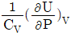
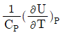
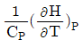
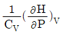
(정답률: 44%)
4. 이상기체의 단열과정에서 온도와 압력에 관계된 식이다. 옳게 나타낸 것은? (단, 열용량비
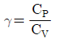
이다.)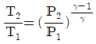
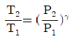
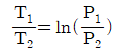
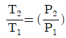
(정답률: 81%)
5. 600K의 열저장고로부터 열을 받아서 일을 하고 400K의 외계에 열을 방출하는 카르노(Carnot) 기관의 효율은?
- 0.33
- 0.40
- 0.88
- 1.00
(정답률: 80%)
6.
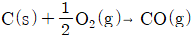
의 반응열은 얼마인가? (단, 다음의 반응식을 참고한다.)(오류 신고가 접수된 문제입니다. 반드시 정답과 해설을 확인하시기 바랍니다.)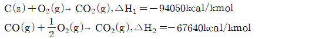
- -37025kcal/kmol
- -26410kcal/kmol
- -74⑤0kcal/kmol
- +26410kcal/kmol
(정답률: 73%)
7. 몰리에 선도(Mollier diagram)는 어떤 성질들을 기준으로 만든 도표인가?
- 압력과 부피
- 온도와 엔트로피
- 엔탈피와 엔트로피
- 부피와 엔트로피
(정답률: 68%)
8. 2성분계 공비 혼합물에서 성분 A, B 의 활동도 계수를 rA와rB, 포화증기압을 PA및 PB라 하고, 이 계의 전압을 Pt라 할 때 수정된 Raoult의 법칙을 적용하여 rB를 옳게 나타낸 것은? (단, B 성분의 기상 및 액상에서의 몰분율은 yB와 XB이며, 퓨개시티계수
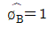
=1이라 가정한다.)- rB=Pt/PB
- rB=Pt/PB(1-XA)
- rB=PtyB/PB
- rB=Pt/PBXB
(정답률: 42%)
9. 엔트로피에 관한 설명 중 틀린 것은?
- 엔트로피는 혼돈도(randomness)를 나타내는 함수이다.
- 융점에서 고체가 액화될 때의 엔트로피 변화는
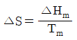
로 표시할 수 있다. - T=0K에서 엔트로피 S=1이다.
- 엔트로피 감소는 질서도(orderliness)의 증가를 의미한다.
(정답률: 76%)
10. 다음 중 동력의 단위가 아닌 것은?
- HP
- kWh
- kgfㆍmㆍs-1
- BTUㆍs-1
(정답률: 59%)
11. 비가역 과정에서의 관계식으로 옳은 것은?
- dS ＞ 0
- dS ＜ 0
- dS = 0
- dS = -1
(정답률: 66%)
12. 이상기체 3mol 이 50℃ 에서 등온으로 10atm 에서 1atm 까지 팽창할 때 행해지는 일의 크기는 몇 J 인가?
- 4433
- 6183
- 18550
- 21856
(정답률: 67%)
13. 두헴(Duhem)의 정리는 “초기에 미리 정해진 화학성분들의 주어진 질량으로 구성된 어떤 닫힌계에 대해서도, 임의의 두 개의변수를 고정하면 평형상태는 완전히 결정된다.”라고 표현할 수 있다. 다음 중 설명이 옳지 않은 것은?
- 정해 주어야 하는 두 개의 독립변수는 세기변수 일수도 있고 크기변수 일수도 있다.
- 독립적인 크기변수의 수는 상률에 의해 결정된다.
- F=1 일 때 두 변수 중 하나는 크기변수가 되어야 한다.
- F=0 일 때는 둘 모두 크기변수가 되어야 한다.
(정답률: 50%)
14. 25℃에서 산소 기체가 50atm으로부터 500atm으로 압축되었을 때 깁스(Gibbs) 자유에너지 변화량의 크기는 약 얼마인가? (단, 산소는 이상기체로 가정한다.)
- 1364cal/mol
- 682cal/mol
- 136cal/mol
- 68cal/mol
(정답률: 61%)
15. 크기가 동일한 3개의 상자 A, B, C 에 상호작용이 없는 입자 10개가 각각 4개, 3개, 3개씩 분포되어 있고, 각 상자들은 막혀 있다. 상자들 사이의 경계를 모두 제거하여 입자가 고르게 분포되었다면 통계 열역학적인 개념의 엔트로피 식을 이용하여 경계를 제거하기 전후의 엔트로피 변화량은 약 얼마인가? (단, k 는 Boltzmann 상수이다.)
- 8.343k
- 15.324k
- 22.32k
- 50.024k
(정답률: 57%)
16. 이상기체 혼합물에 대한 설명 중 옳지 않은 것은? (단, τi(T)는 일정온도 T에서의 적분상수, yi는 이상기체 혼합물 중 성분 i의 몰분율이다.)
- 이상기체의 혼합에 의한 엔탈피 변화는 0이다.
- 이상기체의 혼합에 의한 엔트로피 변화는 0보다 크다.
- 동일한 T, P에서 성분 i의 부분몰부피는 순수성분의 몰부피보다 작다.
- 이상기체 혼합물의 깁스(Gibbs) 에너지는
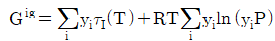
이다.
(정답률: 44%)
17. 부피가 1m3인 용기에 공기를 25℃의 온도와 100bar의 압력으로 저장하려 한다. 이 용기에 저장할 수 있는 공기의 질량은 약 얼마인가? (단, 공기의 평균분자량은 29이며 이상기체로 간주한다.)
- 107kg
- 117kg
- 127kg
- 137kg
(정답률: 70%)
18. 상태함수에 대한 설명으로 옳은 것은?
- 최초와 최후의 상태에 관계없이 경로의 영향으로만 정해지는 값이다.
- 점함수라고도 하며, 일 에너지를 말한다.
- 내부에너지만 정해지면 모든 상태를 나타낼 수 있는 함수를 말한다.
- 내부에너지와 엔탈피는 상태함수이다.
(정답률: 68%)
19. 다음 중에서 같은 환산온도와 환산압력에서 압축인자가 가장 비슷한 것끼리 짝지어진 것은?
- 아르곤 - 크립톤
- 산소 - 질소
- 수소 - 헬륨
- 메탄 - 프로판
(정답률: 66%)
20. 상압 300K에서 2.0L인 이상기체 시료의 부피를 일정압력에서 400cm3로 압축시켰을 때 온도는?
- 60K
- 300K
- 600K
- 1500K
(정답률: 66%)
2과목: 단위조작 및 화학공업양론
21. 18℃, 1atm에서 H2O(L)의 생성열은 -68.4kcal/mol 이다. 다음 반응에서의 반응열이 42kcal/mol인 것을 이용하여 등온등압에서 CO(g)의 생성열을 구하면 몇 kcal/mol 인가?
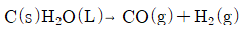
- 110.4
- -110.4
- 26.4
- -26.4
(정답률: 59%)
22. 시강특성치(intensive property)가 아닌 것은?
- 비엔탈피
- 밀도
- 온도
- 내부에너지
(정답률: 55%)
23. 이상기체의 법칙이 적용된다고 가정할 때 용적이 5.5m3인 용기에 질소 28kg을 넣고 가열하여 압력이 10atm이 될 때 도달하는 기체의 온도는 약 몇 ℃인가?
- 698
- 498
- 598
- 398
(정답률: 65%)
24. 질소에 벤젠이 10vol% 포함되어 있다. 온도 20℃, 압력 740mmHg일 때 이 혼합물의 상대포화도는 몇 % 인가? (단, 20℃에서 순수한 벤젠의 증기압은 80mmHg이다.)
- 10.8%
- 80.0%
- 92.5%
- 100.0%
(정답률: 58%)
25. 어떤 물질의 한 상태에서 온도가 dew point 온도보다 높은 상태는 어떤 상태를 의미하는가? (단, 압력은 동일하다.)
- 포화
- 과열
- 과냉각
- 임계
(정답률: 59%)
26. 다음 중 비용(specific volume)의 차원으로 옳은 것은? (단, 길이(L), 질량(M), 힘(F), 시간(T) 이다.)
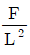
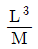
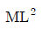
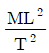
(정답률: 71%)
27. 증류탑을 이용하여 에탄올 25wt%와 물 75wt%의 혼합액 50kg/h을 증류하여 에탄올 85wt%의 조성을 가지는 상부액과 에탄올 3wt%의 조성을 가지는 하부액으로 분리하고자 한다. 상부액에 포함되는 에탄올은 초기 공급되는 혼합액에 함유된 에탄올 중의 몇 wt%에 해당하는 양인가?
- 85
- 88
- 91
- 93
(정답률: 57%)
28. 어느 석회석 성분을 분석하니, CaCO3 92.89wt%, MgCO3 5.41wt%, 불용성분이 1.70wt%였다. 이 석회석 100kg에서 몇 kg의 CO2를 회수할 수 있겠는가? (단, Ca의 분자량은 40, Mg의 분자량은 24.3이다.)
- 43.7
- 47.3
- 54.8
- 58.2
(정답률: 51%)
29. 다음 중 에너지를 나타내지 않는 것은?
- 부피×압력
- 힘×거리
- 몰수×기체상수×온도
- 열용량×질량
(정답률: 64%)
30. 350K, 760mmHg에서의 공기의 밀도는 약 몇 kg/m3인가? (단, 공기의 평균 분자량은 29 이며 이상기체로 가정한다.)
- 0.01
- 1.01
- 2.01
- 3.01
(정답률: 71%)
31. 이중열교환기에 있어서 내부관의 두께가 매우 얇고, 관벽 내부경막열전달계수 hi가 외부경막열전달계수 ho와 비교하여 대단히 클 경우 총괄열전달계수 U에 대한 식으로 가장 적합한 것은?
- U=hi+ho
- U=hi
- U=ho
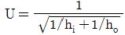
(정답률: 38%)
32. 공급원료 1몰을 원료 공급단에 넣었을 때 그 중 증류탑의 탈거부(stripping section)로 내려가는 액체의 몰수를 q로 정의 한다면, 공급원료가 과열증기일 때 q 값은?
- q ＜ 0
- 0 ＜ q ＜ 1
- q = 0
- q = 1
(정답률: 57%)
33. 그림은 전열장치에 있어서 장치의 길이와 온도 분포의 관계를 나타낸 그림이다. 이에 해당하는 전열장치는? (단, T는 증기의 온도, t는 유체의 온도, Δt1, Δt2는 각각 입구 및 출구에서의 온도차이다.)
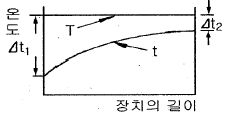
- 과열기
- 응축기
- 냉각기
- 가열기
(정답률: 48%)
34. 흡수탑의 충전물 선정 시 고려해야 할 조건으로 가장 거리가 먼 것은?
- 기액간의 접촉율이 좋아야 한다.
- 압력강하가 너무 크지 않고 기액간의 유통이 잘 되어야 한다.
- 탑내의 기액물질에 화학적으로 견딜수 있는 것이어야 한다.
- 규칙적인 배열을 할 수 있어야 하며 공극률이 가능한 한 작아야 한다.
(정답률: 65%)
35. 관(pipe, tube)의 치수에 대한 설명 중 틀린 것은?
- 파이프의 벽두께는 Schedule Number로 표시할 수 있다.
- 튜브의 벽두께는 BWG(birmingham wire gauge) 번호로 표시할 수 있다.
- 동일한 외경에서 Schedule Number 가 클수록 벽두께가 두껍다.
- 동일한 외경에서 BWG가 클수록 벽두께가 두껍다.
(정답률: 60%)
36. 다음 단위조작 가운데 침출(leaching)에 속하는 것은?
- 소금물 용액에서 소금분리
- 식초산 - 수용액에서 식초산 회수
- 금광석에서 금을 회수
- 물속에서 미량의 브롬제거
(정답률: 51%)
37. 총괄 에너지 수지식을 간단하게 나타내면 다음과 같을 때 α는 유체의 속도에 따라서 변한다. 유체가 층류일 때 다음 중 α에 가장 가까운 값은? (단, Hi는 엔탈피, Viave는 평균유속, Z는 높이, g는 중력가속도, Q는 열량, Ws는 일이다.)
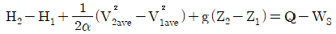
- 0.5
- 1
- 1.5
- 2
(정답률: 37%)
38. 오리피스 미터(orifice meter)에 U자형 마노미터를 설치하였고 마노미터는 수은이 채워져 있으며, 그 위의 액체는 물이다. 마노미터에서의 압력차가 15.44kPa이면 마노미터의 읽음은 약 몇 mm인가? (단, 수은의 비중은 13.6 이다.)
- 75
- 100
- 125
- 150
(정답률: 56%)
39. 롤 분쇄기에 상당직경 5cm의 원료를 도입하여 상당직경 1cm로 분쇄한다. 롤 분쇄기와 원료 사이의 마찰계수가 0.34 일 때 필요한 롤의 직경은 몇 cm인가?
- 35.1
- 50.0
- 62.3
- 70.1
(정답률: 31%)
40. 가열된 평판위로 Prandtl 수가 1보다 큰 액체가 흐를 때 수력학적 경계층 두께 δh와 열전달 경계층 두께 δT와의 관계로 옳은 것은?
- δh ＞ δT
- δh ＜ δT
- δh = δT
- Prandtl 수만으로는 알 수 없다.
(정답률: 48%)
3과목: 공정제어
41. Laplace 변환 등에 대한 설명으로 틀린 것은?
- y(t)=sinwt의 Laplace 변환은 w/(s2+w2)이다.
- y(t)=1-e-t/τ의 Laplace 변환은 1/(s(τs+1))이다.
- 높이와 폭이 1인 사각펄스의 폭을 0에 가깝게 줄이면 단위 임펄스와 같은 모양이 된다.
- Laplace 변환은 선형변환으로 중첩의 원리(superposition principle)가 적용된다.
(정답률: 41%)
42. 다음 block 선도로부터 전달함수 Y(s)/X(s)를 구하면?
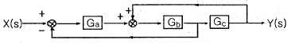
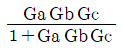
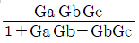
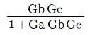
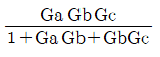
(정답률: 62%)
43. 전달함수가
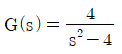
인 1차계의 단위 임펄스 응답은?- e2t+e-2t
- 1-e-2t
- e2t-e-2t
- 1+e2t
(정답률: 62%)
44. 다음 중 비선형계에 해당하는 것은?
- 0차 반응이 일어나는 혼합 반응기
- 1차 반응이 일어나는 혼합 반응기
- 2차 반응이 일어나는 혼합 반응기
- 화학 반응이 일어나지 않는 혼합조
(정답률: 54%)
45. 어떤 제어계의 특성방정식은
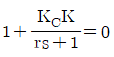
으로 주어진다. 이 제어시스템이 안정하기 위한 조건은? (단, r는 양수이다.)- KCK ＞ -1
- KCK ＜ 0
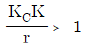
- KC＜ 0
(정답률: 55%)
46. 1차계의 sin 응답에서 ωr가 증가되었을 때 나타나는 영향을 옳게 설명한 것은? (단, ω는 각 주파수, r는 시간정수, AR은 진폭비, |ø|는 위상각의 절대값이다.)
- AR은 증가하나 |ø|는 감소한다.
- AR, |ø|모두 증가한다.
- AR은 감소하나 |ø|는 증가한다.
- AR, |ø|모두 감소한다.
(정답률: 40%)
47. 공정의 위상각(phase angle) 및 주파수에 대한 설명으로 틀린 것은?
- 물리적 공정은 항상 위상지연(음의 위상각)을 갖는다.
- 위상지연이 크다는 것은 폐루프의 안정성이 쉽게 보장될 수 있음을 의미한다.
- FOPDT(First Order Plus Dead Time) 공정의 위상지연은 주파수 증가에 따라 지속적으로 증가한다.
- 비례제어시 critical 주파수와 ultimate 주파수는 일치한다.
(정답률: 50%)
48. 다음 블록선도에서 C/R의 전달함수는?
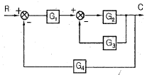
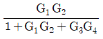
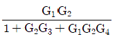
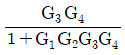
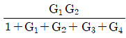
(정답률: 65%)
49. 이차계 공정은
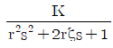
의 형태로 표현된다. 0＜ζ＜1 이면 계단입력변화에 대하여 진동응답이 발생하는데 이때 진동응답의 주기와 r, ζ와의 관계에 대한 설명으로 옳은 것은?- 진동주기는 ζ가 클수록, r가 작을수록 커진다.
- 진동주기는 ζ가 작을수록, r가 클수록 커진다.
- 진동주기는 ζ와 r가 작을수록 커진다.
- 진동주기는 ζ와 r가 클수록 커진다.
(정답률: 23%)
50. 총괄전달함수가
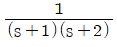
인 계의 주파수 응답에 있어 주파수가 2rad/s 일 때 진폭비는?- 1/√10
- 1/(2√10)
- 1/5
- 1/10
(정답률: 42%)
51. PID제어기를 이용한 설정치 변화에 대한 제어의 설명 중 옳지 않은 것은?
- 일반적으로 비례이득을 증가시키고 적분시간의 역수를 증가시키면 응답이 빨라진다.
- P제어기를 이용하면 모든 공정에 대해 항상 정상상태 잔류오차(steady-state offset)가 생긴다.
- 시간지연이 없는 1차 공정에 대해서는 비례이득을 매우 크게 증가시켜도 안정성에 문제가 없다.
- 일반적으로 잡음이 없는 느린 공정의 경우 D모드를 적절히 이용하면 응답이 빨라지고 안정성이 개선된다.
(정답률: 33%)
52. Y(s)=4/(s3+2s2+4s)을 역라플라스 변환하여 y(t) 값을 옳게 구한 것은?
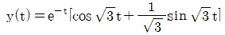
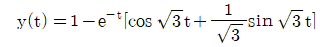
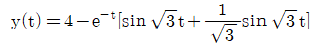
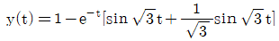
(정답률: 50%)
53. 다음의 함수를 라플라스로 전환한 것으로 옳은 것은?
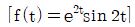
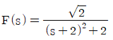
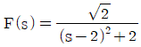
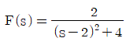
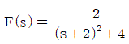
(정답률: 53%)
54. 주파수 응답에서 위상 앞섬(phase lead)을 나타내는 제어기는?
- 비례제어기
- 비례 - 미분제어기
- 비례 - 적분제어기
- 제어기는 모두 위상의 지연을 나타낸다.
(정답률: 52%)
55. 공정이득(gain)이 2인 공정을 설정치(set point)가 1 이고 비례 이득(Proportional gain)이 1/2 인 비례 (Proportional) 제어기로 제어한다. 이 때 오프셋은 얼마인가?
- 0
- 1/2
- 3/4
- 1
(정답률: 40%)
56. 발열이 있는 반응기의 온도제어를 위해 그림과 같이 냉각수를 이용한 열교환으로 제열을 수행하고 있다. 다음 중 옳은 설명은?
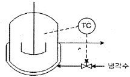
- 공압 구동부와 밸브형은 각각 ATO(Air-To-Open), 선형을 택하여야 한다.
- 공압 국동부와 밸브형은 각각 ATC(Air-To-Close), Equal Percentage(등비율)형을 택하여야 한다.
- 공압 구동부와 밸브형은 각각 ATO(Air-To-Open), Equal Percentage(등비율)형을 택하여야 한다.
- 공압 구동부는 ATC(Air-To-Close)를 택해야 하지만 밸브형은 이 정보만으로는 결정하기 어렵다.
(정답률: 37%)
57. 가정의 주방용 전기오븐을 원하는 온도로 조절하고자 할 때 제어에 관한 설명으로 다음 중 가장 거리가 먼 것은?
- 피제어변수는 오븐의 온도이다.
- 조절변수는 전류이다.
- 오븐의 내용물은 외부교란변수(외란) 이다.
- 설정점(set point)은 전압이다.
(정답률: 54%)
58. 비례 - 적분제어의 가장 중요한 장점은?
- 최대변위가 작다.
- 잔류편차(offset)가 없다.
- 진동주기가 작다.
- 정상상태에 빨리 도달한다.
(정답률: 67%)
59. 특성방정식이 s3-3s+2=0인 계에 대한 설명으로 옳은 것은?
- 안정하다
- 불안정하고, 양의 중근을 갖는다.
- 불안정하고, 서로 다른 2개의 양의 근을 갖는다.
- 불안정하고, 3개의 양의 근을 갖는다.
(정답률: 51%)
60. 다음 중 순수한 전달지연(transportation lag)에 대한 전달함수는?
- G(s)=e-rs
- G(s)=re-rs
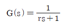
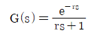
(정답률: 46%)
4과목: 공업화학
61. 다음 중 에폭시 수지의 합성과 관련이 없는 물질은?
- 비스페놀-에이
- 에피클로로 하이드린
- 톨루엔 디이소시아네이트
- 멜라민
(정답률: 32%)
62. 석회질소 제조시 촉매역할을 해서 탄화칼슘의 질소화 반응을 촉진시키는 물질은?
- CaCO3
- CaO
- CaF2
- C
(정답률: 45%)
63. 포름알데히드를 사용하는 축합형수지가 아닌 것은?
- 페놀수지
- 멜라민수지
- 요소수지
- 알키드수지
(정답률: 45%)
64. [보기]의 설명에 가장 잘 부합되는 연료전지는?
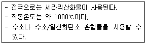
- 인산형 연료전지(PAFC)
- 용융탄산염 연료전지(MCFC)
- 고체산화물형 연료전지(SOFC)
- 알칼리연료전지(AFC)
(정답률: 50%)
65. H2와 Cl2를 직접 결합시키는 합성염화수소의 제법에서는 활성화된 분자가 연쇄를 이루기 때문에 반응이 폭발적으로 진행된다. 실제 조작에서는 폭발을 막기 위해서 어떤 조치를 하는가?
- 염소를 다소 과잉으로 넣는다.
- 수소를 다소 과잉으로 넣는다.
- 수증기를 공급하여 준다.
- 반응압력을 낮추어 준다.
(정답률: 63%)
66. 다음 중 석유의 성분으로 가장 거리가 먼 것은?
- C3H8
- C2H4
- C6H6
- C2H5OC2H5
(정답률: 53%)
67. 어떤 유지 2g속에 들어 있는 유리지방산을 중화시키는데 KOH가 200mg 사용되었다. 이 시료의 산가(acid value)는?
- 0.1
- 1
- 10
- 100
(정답률: 46%)
68. 질산공업에서 암모니아 산화반응은 촉매 존재하에서 일어난다. 이 반응에서 주반응에 해당하는 것은?
- 2NH3→N2+3H2
- 2NO→N2+O2
- 4NH3+3O2→2N2+6H2O
- 4NH3+5O2→4NO+6H2O
(정답률: 55%)
69. 다음 중 비료의 3요소에 해당하는 것은?
- N, P2O5, CO2
- K2O, P2O5, CO2
- N, K2O, P2O5
- N, P2O5, C
(정답률: 59%)
70. H2와 Cl2를 원료로 하여 염산을 제조하는 공정에 대한 설명 중 틀린 것은?
- HCl 합성반응기는 폭발의 위험성이 있으므로 강도가 높고 부식에 강한 순철 재질로 제조한다.
- 합성된 HCl 은 무색투명한 기체로서 염산용액의 농도는 기상 중의 HCl 농도에 영향을 받는다.
- 일정 온도에서 기상중의 HCl 분압과 액상중의 HCl 증기압이 같을 때 염산농도는 최대치를 갖는다.
- 고농도의 염산을 제조 시 HCl이 물에 대한 용해열로 인하여 온도가 상승하게 된다.
(정답률: 44%)
71. 1000ppm의 처리제를 사용하여 반도체 폐수 1000m3/day를 처리하고자 할 때 하루에 필요한 처리제는 몇 kg 인가?
- 1
- 10
- 100
- 1000
(정답률: 38%)
72. 환원반응에 의해 알코올(alcohol)을 생성하지 않는 것은?
- 카르복시산
- 나프탈렌
- 알데히드
- 케톤
(정답률: 59%)
73. 다음 탄화수소 중 석유의 원유 성분에 가장 적은 양이 포함되어 있는 것은?
- 나프텐계 탄화수소
- 올레핀계 탄화수소
- 방향족 탄화수소
- 파라핀계 탄화수소
(정답률: 52%)
74. 다음의 O2:NH3의 비율 중 질산 제조 공정에서 암모니아 산화율이 최대로 나타나는 것은? (단, Pt 촉매를 사용하고 NH3농도가 9% 인 경우이다.)
- 9 : 1
- 2.3 : 1
- 1 : 9
- 1 : 2.3
(정답률: 62%)
75. 다음 중 접촉개질 반응으로부터 얻어지는 화합물은?
- 벤젠
- 프로필렌
- 가지화 C5 유분
- 이소뷰틸렌
(정답률: 41%)
76. 비닐단량체(VCM)의 중합반응으로 생성되는 중합체 PVC가 분자량 425000 으로 형성되었다. Carothers에 의한 중합도(degree of polymerization)는 얼마인가?
- 2500
- 3580
- 5780
- 6800
(정답률: 45%)
77. 벤젠을 산촉매를 이용하여 프로필렌에 의해 알킬화함으로써 얻어지는 것은?
- 프로필렌옥사이드
- 아크릴산
- 아크롤레인
- 큐멘
(정답률: 54%)
78. 솔베이법의 기본공정에서 사용되는 물질로 가장 거리가 먼 것은?
- CaCO3
- NH3
- HNO3
- NaCl
(정답률: 43%)
79. 소금의 전기분해 공정에 있어 전해액은 양극에 도입되어 격막을 통해 음극으로 흐른다. 격막법 전해조의 양극재료로서 구비하여야 할 조건 중 옳지 않은 것은?
- 내식성이 우수하여야 한다.
- 염소과전압이 높고 산소과전압이 낮아야 한다.
- 재료의 순도가 높은 것이 좋다.
- 인조흑연을 사용하지만 금속전극도 사용할 수 있다.
(정답률: 58%)
80. 다음 중 석유의 성분으로 질소 화합물에 해당하는 것은?
- 나프텐산
- 피리딘
- 나프토티오펜
- 벤조티오펜
(정답률: 61%)
5과목: 반응공학
81. 다음과 같은 경쟁반응에서 원하는 반응을 가장 좋게 하는 접촉방식은? (단, n ＞ P, m ＜ Q)
(정답률: 63%)
82. 순환식 플러그흐름 반응기에 대한 설명으로 옳은 것은?
- 순환비는 계를 떠난 량/환류량 으로 표현된다.
- 순환비 = ∞ 인 경우, 반응기 설계식은 혼합 흐름식 반응기와 같게 된다.
- 반응기 출구에서의 전화율과 반응기 입구에서의 전화율의 비는 용적 변화율 제곱에 비례한다.
- 반응기 입구에서의 농도는 용적 변화율에 무관하다.
(정답률: 52%)
83. 다음 반응식과 같이 A 와 B 가 반응하여 필요한 생성물 R 과 불필요한 물질 S 가 생길 때, R 로의 전화율을 높이기 위해서 반응물질의 농도(C)를 어떻게 조정해야 하는가? (단, 반응 1은 A 및 B 에 대하여 1차 반응이고, 반응 2도 1차 반응이다.)
- CA의 값을 CB의 2배로 한다.
- CB의 값을 크게 한다.
- CA의 값을 크게 한다.
- CA와 CB의 값을 같게 한다.
(정답률: 60%)
84. A→R인 1차 액상 반응의 속도식이 -rA=kCA로 표시된다. 이 반응을 plug flow reactor에서 진행시킬 경우 체류시간 (r)과 전화율 (XA)사이의 관계식은?
- kr=-ln(1-XA)
- kr=-CAOln(1-XA)
- kr=X/(1-XA)
- kr=CAOXA/(1-XA)
(정답률: 61%)
85. 반응에서 R 의 농도가 최대가 되는 점은? (단, k1=k2이다.)
- CA＞CR
- CR=CS
- CA=CS
- CA=CR
(정답률: 39%)
86. 기상반응 A→4R 이 흐름반응기에서 일어날 때 반응기 입구에서는 A가 50%, inertgas가 50% 포함되어 있다. 전화율이 100% 일 때 반응기 입구에서 체적속도가 1이면 반응기 출구에서 체적속도는 얼마인가? (단, 반응기의 압력은 일정하다.)
- 0.5
- 1
- 1.5
- 2.5
(정답률: 32%)
87. 다음과 같은 연속 반응에서 각 반응이 기초반응이라고 할 때 R의 수율을 가장 높게 할 수 있는 반응계는? (단, 각 경우 전체 반응기의 부피는 같다.)
(정답률: 46%)
88. A → C 의 촉매반응이 다음과 같은 단계로 이루어진다. 탈착반응이 율속단계일 때 Langmuir Hinshelwood모델의 반응속도식으로 옳은 것은? (단, A 는 반응물, S 는 활성점, AS 와 CS 는 흡착 중간체이며, k 는 속도상수, K 는 평형상수, SO 는 초기 활성점, []는 농도를 나타낸다.)
(정답률: 41%)
89. 기초반응 에서 R의 순간수율 ø(R/A)를 CA에 대해 그린 결과가 그림에 곡선으로 표시되어 있다. 원하는 물질 R의 총괄수율이 직사각형으로 표시되는 경우, 어떤 반응기를 사용하였는가?
- plug flow reactor
- mixed-flow reactor 와 plug flow reactor
- mixed flow reactor
- laminar flow reactor
(정답률: 55%)
90. 비가역 1차 액상반응 A→P를 직렬로 연결된 2개의 CSTR에서 진행시킬 때 전체 반응기 부피를 최소화하기 위한 조건에 해당하는 것은? (단, 첫 번째와 두 번째 반응기의 부피는 각각 VC1 , VC2이다.)
- VC1=2VC2
- 2VC1=VC2
- 3VC1=VC2
- VC1=VC2
(정답률: 57%)
91. 비가역 0차 반응에서 전화율이 1로 반응이 완결되는데 필요한 반응 시간에 대한 설명으로 옳은 것은?
- 초기 농도의 역수와 같다.
- 속도 상수 k의 역수와 같다.
- 초기 농도를 속도 상수로 나눈 값과 같다.
- 초기 농도에 속도 상수를 곱한 값과 같다.
(정답률: 61%)
92. 체중 70kg, 체적 0.075m3인 사람이 포도당을 산화시키는데 하루에 12.8mol 의 산소를 소모한다고 할 때 이 사람의 반응속도를 mol O2/m3·s 로 표시하면 약 얼마인가?
- 2×10-4
- 5×10-4
- 1×10-3
- 2×10-3
(정답률: 53%)
93. Arrhenius 법칙에서 속도상수 k와 반응온도 의 관계를 옳게 설명한 것은?
- k 와 T는 직선관계가 있다.
- ln k와 1/T은 직선관계가 있다.
- ln k와 ln(1/T)은 직선관계가 있다.
- ln k와 T는 직선관계가 있다.
(정답률: 66%)
94. 다음의 반응에서 반응속도 상수 간의 관계는 k1=k-1=k2=k-2이며 초기 농도는 CAO=1, CRO=CSO=0일 때 시간이 충분히 지난 뒤 농도 사이의 관계를 옳게 나타 낸 것은?
- CA≠CR=CS
- CA=CR≠CS
- CA=CR=CS
- CA≠CR≠CS
(정답률: 59%)
95. A→R인 액상 반응이 부피가 0.1L 인 플러그 흐름 반응기에서 -rA=50CA2mol/Lㆍmin로 일어난다. A 의 초기농도 CAO는 0.1mol/L 이고 공급속도가 0.⑤L/min 일 때 전화율은 얼마인가?
- 0.509
- 0.609
- 0.809
- 0.909
(정답률: 49%)
96. 어떤 물질의 분해반응은 비가역 1차반응으로 90% 까지 분해하는데 8123초가 소요되었다면 40% 분해하는데 걸리는 시간은 약 몇 초인가?
- 1802
- 2012
- 3267
- 4128
(정답률: 59%)
97. A→B인 1차 반응에서 플러그 흐름 반응기의 공간시간(space time) r를 옳게 나타낸 것은? (단, 밀도는 일정하고, XA는 A 의 전화율, k는 반응속도상수이다.)
- r=CA+ln(1-XA)
(정답률: 58%)
98. 자기촉매 반응에서 목표 전화율이 반응속도가 최대가 되는 반응 전화율보다 낮을 때 사용하기에 유리한 반응기는? (단, 반응생성물의 순환이 없는 경우이다.)
- 혼합 반응기
- 플러그 반응기
- 직렬 연결한 혼합 반응기와 플러그 반응기
- 병렬 연결한 혼합 반응기와 플러그 반응기
(정답률: 45%)
99. 이상형 반응기의 대표적인 예가 아닌 것은?
- 회분식 반응기
- 플러그흐름 반응기
- 혼합흐름 반응기
- 촉매 반응기
(정답률: 64%)
100. 다음의 균일계 액상 평행 반응에서 S의 순간 수율을 최대로 하는 CA의 농도는? (단, rR=CA, rs=2CA2,rT=CA3이다.)
- 0.25
- 0.5
- 0.75
- 1
(정답률: 34%)